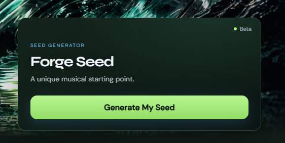
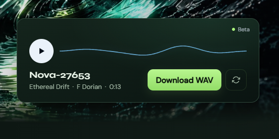

Getting Started with Forge Seed
Discover a new musical starting point with every generation.
Every composition begins somewhere. A chord, a texture, a melody or an unexpected sound can become the foundation of an entire musical piece.
Forge Seed was designed around this idea: instead of starting with an empty project, start with a sound.
What is a Seed?
A Seed is a generated piece of audio designed to inspire new musical ideas.
Rather than providing a finished composition, Forge Seed introduces musical material that you can explore, transform and develop into something of your own.
Each Seed has its own musical identity, harmonic context and sonic character.
Generating your first Seed
Forge Seed is integrated directly into the Explore page of Chrysasynth Forge.
There are no parameters to configure before getting started. Simply click Generate My Seed and let Forge introduce a new musical starting point.

This deliberately minimal approach encourages discovery without the pressure of making technical decisions beforehand.
Listen first. Decide what comes next.
Understanding your Seed
Once generated, your Seed is presented alongside several pieces of musical information.

- Name: the identity of your generated Seed.
- Type: an indication of its musical or sonic character.
- Key and scale: its harmonic context, useful when introducing additional musical elements.
- Duration: the length of the generated audio.
You can preview the result directly in Forge, download it as a WAV file or generate another Seed to explore a different musical direction.
From Seed to composition
The most interesting part begins after generation. A Seed can become the foundation of a composition, but it can also serve a completely different purpose depending on how you process it.
Build around its harmonic identity
Use the displayed key and scale to introduce complementary melodies, basslines or harmonic layers. If your Seed is generated in F Dorian, try exploring the notes of that mode while listening to its existing musical atmosphere.
Transform its texture
Import your Seed into your preferred audio environment and experiment with time stretching, filtering, granular processing or modulation. A short musical phrase can become a slowly evolving soundscape.
Explore its internal details
Instead of using the entire audio file, isolate a small fragment. A single transient, harmonic movement or textural detail may contain enough character to inspire a completely different sound.
Change its context
Place your Seed against an unexpected rhythm, reverse it or introduce contrasting instrumentation. Sometimes, the identity of a sound changes entirely when its surroundings change.
Growing your personal Seed library
Every downloaded Seed also appears in Your Seeds, a local library integrated into Forge.
This allows you to return to previously downloaded sounds and revisit ideas that may not have found their place in an earlier composition.
Your library is stored in your browser and does not require an account. Clearing your browser's site data may remove its contents, so keep a separate copy of the WAV files you wish to preserve.
Over time, these sounds can become a personal collection of creative starting points.
Let curiosity lead
Forge Seed is not intended to replace musical knowledge, artistic intention or sound design techniques. It is an invitation to explore unfamiliar material and discover possibilities that might not emerge through your usual creative habits.
You do not always need to know what you want to create before you begin.
Sometimes, you just need a Seed.
Forge Seed is currently in beta.